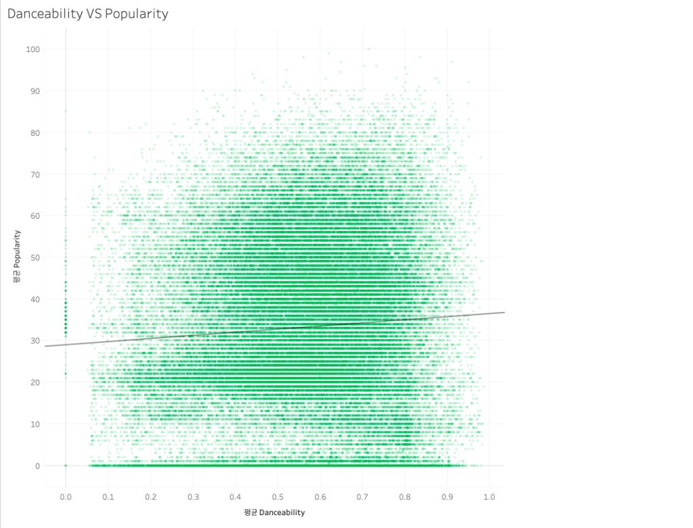
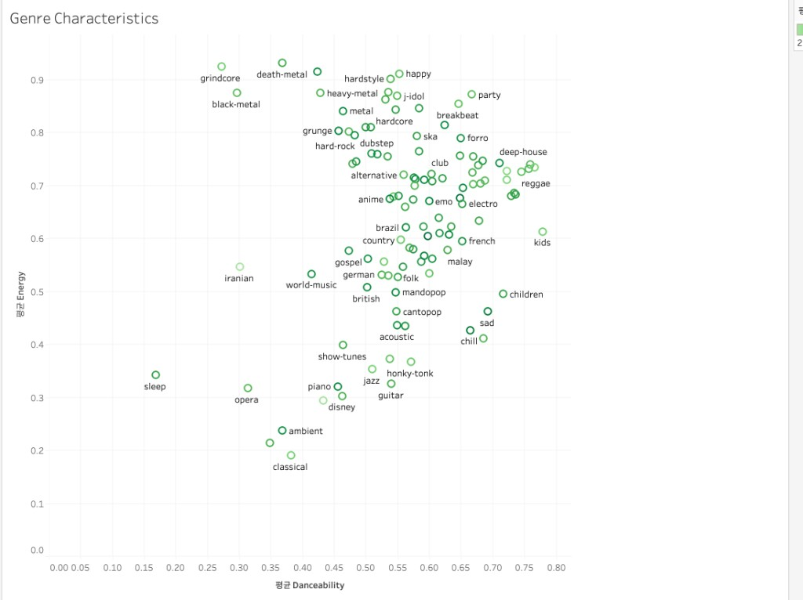

114,000곡, 114개 장르, 10가지가 넘는 오디오 특성을 Python EDA로 검증하고 Tableau 대시보드 한 장에 담았습니다.
11만 곡의 메타데이터와 오디오 특성을 Python으로 탐색하고, 지표를 정의한 다음 Tableau 대시보드로 옮기는 흐름으로 설계했습니다.
Popularity의 분포와 결측·중복 여부를 Python으로 검증한 다음 대시보드에 올립니다.
평균 인기도, 평균 Danceability, 평균 Energy, 고유 Track 수를 핵심 KPI로 고정해 모든 시트가 같은 기준을 쓰게 했습니다.
KPI, 순위, 관계 순서로 시선이 흐르도록 배치해 한 장 안에서 결론까지 읽히게 했습니다.
출처는 Kaggle의 “Spotify Tracks Dataset”입니다. API 호출이나 크롤링 없이 CSV 한 파일을 Python과 Tableau의 공통 소스로 썼습니다.
수집 시점 총 트랙 행 수
메타 10개 + Audio Feature 12개
장르별 1,000행 · 대시보드의 기준 차원
Spotify가 제공한 수치형 특성
0~1 스케일
고유 단위
114개 장르 라벨은 대시보드의 유일한 차원 축입니다. 한 곡이 여러 장르에 중복 등록될 수 있어 고유 Track 수는 따로 세야 합니다.
데이터 손실은 아주 작았고, 장르 라벨과 Audio Feature 컬럼은 모두 그대로 남겼습니다.
한 곡이 여러 장르에 등록되어 있어 113,999행 가운데 24,259행이 같은 곡의 반복입니다. 이 차이를 KPI 정의 단계에서 먼저 잡아야 “트랙 수”가 부풀지 않습니다.
대부분의 곡이 중간 이하 점수에 몰려 있습니다. 80점 이상은 전체의 1.05%뿐이고, 0점인 곡도 14%(16,020행)나 됩니다.
모든 Audio Feature와의 상관계수가 |r| < 0.1이고, 가장 큰 값도 instrumentalness의 −0.095입니다. Popularity는 단일 특성으로 설명되지 않습니다.
강한 양의 상관
강한 음의 상관
의외로 무드 계열인 sad(0.69)와 chill(0.66)이 가장 높고, grunge(0.46)가 가장 낮습니다.
grunge가 0.80으로 압도적이고, chill(0.43)과 sad(0.46)은 그 절반 수준입니다.
chill·sad는 “높은 Danceability + 낮은 Energy”, grunge는 그 반대입니다. 같은 인기 상위권 안에서도 성격이 완전히 갈립니다.
Python으로 검증한 질문들을 KPI, 순위, 관계의 3단 구조로 재배치하고 워크시트 8개를 대시보드 1장(1366 × 868 고정)으로 묶었습니다.
AVG([popularity])AVG([danceability])AVG([energy])COUNTD([track_id])

모든 하위 시트가 이 기준선과 비교되도록 화면 맨 위에 두었습니다. 트랙 수는 행 수가 아니라 COUNTD로 세어 중복 집계를 막았습니다.
114개 장르를 다 나열하지 않고 상위 10개만 남겼습니다. 장르명이 길어 가로 막대를 쓰고, 값 레이블을 붙여 축을 읽지 않아도 되게 했습니다.
곡 단위 Danceability × Popularity(추세선)로 “약한 상관”을, 장르 단위 Danceability × Energy로 “장르 간 뚜렷한 차이”를 보여 줍니다.
색은 #1DB954 하나만 쓰고 강조는 채도와 크기로만 했습니다. 범례가 필요 없고, 흑백 인쇄나 색각 이상 사용자에게도 순위가 그대로 전달됩니다.
왜 COUNTD였나 — 같은 track_id가 여러 장르 행에 등장합니다. 행 수를 그대로 쓰면 트랙 수가 113,999로 27% 부풀려집니다. COUNT 기반 KPI를 그대로 내보냈다면 대시보드 첫 줄부터 틀린 숫자가 나갔을 것입니다.
단일 지표보다 분포, 장르, 특성 사이 관계를 함께 해석할 때 설명력이 높아집니다.
평균 33.24, 중앙값 35이며 전곡의 74.2%가 0~49점 구간에 있습니다. 80점 이상은 1.05%뿐입니다.
pop-film(59.28)과 k-pop(56.95)은 전체 평균보다 23점 이상 높고, TOP 10의 마지막도 47점대를 유지합니다.
모든 Audio Feature와 Popularity의 상관계수가 |r| < 0.1(최대 instrumentalness −0.095)이고, 산점도 추세선도 거의 수평입니다. 인기에는 음악 특성 밖의 요인이 함께 작용합니다.
곡 단위 산점도는 넓은 점구름이라 패턴을 읽기 어렵지만, 장르 단위로 평균을 내면 Danceability × Energy 평면에 뚜렷한 군집이 드러납니다.
Audio Feature만으로는 인기를 충분히 설명할 수 없습니다. 추천 시스템은 음악 특성과 사용자 행동 정보를 함께 반영해야 합니다.
장르와 맥락을 함께 봐야 합니다.
COUNTD를 쓰지 않으면 트랙 수가 27% 부풀려집니다. 정의가 곧 신뢰입니다.
아티스트, 발매 시점, 청취 이력, 개인 취향이 인기 점수를 보완합니다.
AVG와 COUNTD를 고른 근거와 표기 규칙을 문서화
가로 막대, 산점도, Top N 필터를 고른 이유를 설명
KPI → 순위 → 관계 3단 구조로 읽는 순서를 통제
Python EDA로 검증한 값만 대시보드에 노출
{FIXED [track_id]})로 계산해 중복 가중 제거